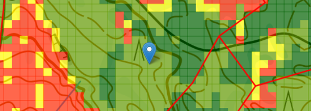
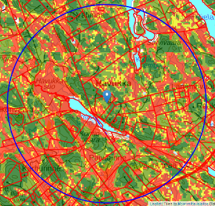
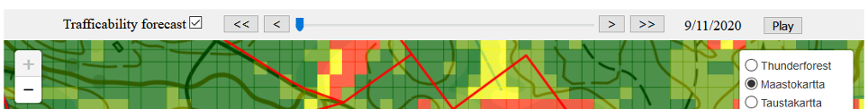
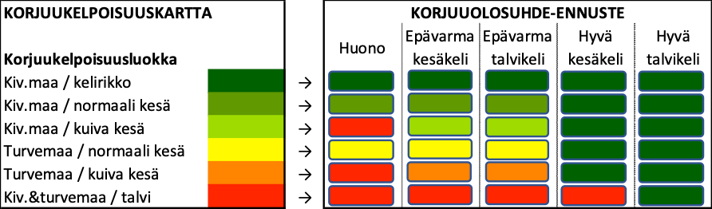

Forestry operations depend on good trafficability of terrain and dirt roads on location. The Finnish Forest Centre has produced trafficability maps based on high resolution laser scanning of most parts of Finland. These maps call for dry or winter coditions for many forests in Finland to be trafficable. Our app gives a 6 month foresight identifying good or bad conditions within the 6 classes of the trafficability map.
When you open the page it can use your location information to zoom in on the surrounding area and show the 6 month forecast for it in a graph with summer and winter condition analysis. The blue circle indicates the area where the graph information is valid. You can navigate the date on the map below with a slider, back and forward buttons or play to go through all dates.
Each date map translates the forecasted indexes into changes to trafficability classes on the map for that day. Good winter conditions allow forest machines in all terrains, good summer conditions leave out winter classes. Bad conditions are identified for areas that need dry or winter conditions and these are not predicted. Seasonal forecasts are far from certain, so we also have situations where we can't predict conditions.
Below the map three graphs go into detail explaining the conditions background. The predictions use EU Copernicus climate change service seasonal forecasts using the Copernicus climate data store, which are a tool combining climatology and large scale weather pattern teleconnections to indicate directions of future climate. So graphs are not daily weather forecasts, but a range of possibilities for each day and our analysis is based on 90% of these to concure on a good or bad condition. The graphs show all 51 members of the bias-adjusted and post processed prediction ensemble interpolated to the location on the map. It represents many square kilometres, not one spot as the resolution of the models used ranges from 5 to 100 kilometers. The red lines represent short term weather forecasts by FMI. The soil moisture forecast is for a deeper layer than in seasonal predictions and thus shows smaller values.
Summer good/dry conditions are based on soil wetness below 10 cm ground being under 40% with 90% of prediction members. Winter good conditions are either based on soil temperature at 20 cm below ground being under 0 °C or snow depth being more than 40 cm. Again 90% of the prediction members have to agree. Past dates and the coming first 10 days are using short term weather forecast instead of seasonal prediction, and also 20% limit for soil moisture because of a different soil layer depth.
The app allows browsing the map and clicking for analysis graphs all over Northern Europe, but trafficability analysis is available only in Finland with over 80% of land area covered. In areas without trafficability analysis the map shows average soil wetness, temperature and snow depth predictions, but the information is intended to be coarse as this information should not be considered precise, it is estimating future climatology of the variable. Also good and bad trafficability is analyzed in the graphs, but it can't be translated for particular parcels on the map.
The service is developed with EU support and it allows this service to be available for free for a one year trial phase. You can send feedback using the form above. Enjoy!
Carbon emissions and forest operations: A short guideline for the forestry sector (PDF)
Forest Fire Index is provided by Copernicus Emergency Management Service.
Tree Cover Density is for year 2018 and provided by Copernicus Land Monitoring Service.
Harvester Season as Copernicus C3S service
Data in action at Copernicus Observer
Harvester Seasons participated in the Copernicus Climate Change Gala at 15th of October 2021 among other successful service developments and applications within C3S. (YouTube-video)
Harvester Seasons is implemented and using computing facilities of DIAS platform WEkEO.
Jo muutaman vuoden saatavilla olleet Metsäkeskuksen tarjoamat korjuukelpoisuuskartat kattavat yli 80 % Suomen metsämaasta. Uusi Harvester Seasons -palvelumme antaa kuuden kuukauden ennusteen hyvistä ja huonoista korjuuolosuhteista kuuden korjuukelpoisuusluokan kannalta. Toisin sanoen, korjuukelpoisuuskarttojen esittämään tietoa täydennetään sää- ja ilmastotiedoilla, jolloin korjuukelpoisuuskarttojen esittämästä korjuukelpoisuudesta saadaan ajankohtaan paremmin osuva.
Kun avaat Harvester Seasons -sivuston, sivusto kysyy mahdollisuutta käyttää sijaintiasi. Voit hyväksyä sijainnin käytön, jolloin kartta kohdentuu sijaintiisi käyttäessäsi ohjelmaa älylaitteella, tai itse kohdentaa haluamaasi paikkaan kartalla.
Tarkenna kartta haluamaasi maastonkohtaan ja klikkaa hiirellä tai kosketa sormella sininen osoitinmerkki alueelle. Tällöin ohjelman tekee laskelman (kestää hetken) maaperän kosteudesta, roudasta ja lumen syvyydestä alueelle.
Laskelma tehdään sinisen ympyrän alueen sää- ja ilmastotietojen perusteella (zoomaa leimikkotasolta kauemmaksi, jotta näet sinisen ympyrän.)
Karttaikkunan oikeasta yläkulmassa olevasta valikosta voit valita karttatasoja maaperän kosteuden, maaperän lämpötilan, lumen paksuuden ja metsäpaloindeksin tarkastelemiseksi. Karttatasot toimivat vain riittävän isolla mittakaavalla tarkasteltaessa.
Zoomaa takaisin lähelle sinistä osoitinmerkkiä. Leimikkotasolla näkyvässä perustilanteessa on esillä perinteisen korjuukelpoisuuskartan esittämä tieto alueen korjuukelpoisuudesta.
Kun laitat ruksin Trafficability forecast -kohtaan kartan ylälaidassa, Play-toiminto aktivoituu ja voit tarkastella karttaruudun aikajanalla kelaten korjuukelpoisuusarviota eteenpäin seuraavalle kuudelle kuukaudelle sää- ja ilmasto-olosuhteet huomioiden. Voit ohjata kartan päivämäärää myös liukukytkimellä sekä eteen- ja taaksepäin painikkeilla.
Kartan yläpuolella kuvaajassa on kaksi indeksiä (Summer Index ja Winter Index), jotka kuvaavat kohteen korjuukelpoisuutta kesä- ja talvitilanteiden kannalta asteikolla hyvä, epävarma (keskellä asteikkoa) ja huono.
Summer Index muodostetaan maan pintakerroksen (0 – 28 cm) kosteuden perusteella. Arvo on Hyvä, jos maaperän kosteusprosentti on pienempi kuin 40 %. Menneet päivämäärät sekä tulevat ensimmäiset 10 päivää perustuvat vuodenaikaisennusteen sijaan lyhyemmän aikavälin sääennusteeseen, ja johtuen ennusteiden erosta maakerroksen syvyydessä, käytössä on tällöin maankosteuden osalta 20 % raja-arvo.
Winter Index muodostetaan lumikerroksen paksuuden ja maaperän lämpötilan perusteella. Arvo on Hyvä, jos lunta on yli 40 cm tai routaa 20 cm.
Korjuukelpoisuusluokituksen muuttuminen säätiedon perusteella.
Jokaisen päivän kartalla ennustetut indexit vaihtavat korjuukelpoisuus luokitusta hyväksi tai huonoksi. Hyvät talviolosuhteet sallivat korjuun kaikialla, hyvät kuivat kesätilanteet sallivat korjuun muualla kuin talviluokissa. Huonoja olosuhteita esitetään kuivuutta tai talviolosuhteita edellyttävissä paikoissa, jos olosuhteita ei ennusteta. Vuodenaikaisennusteet eivät ole luotettavia kuten sääennusteet, siksi on myös tilanteita, joissa emme tohdi ennustaa olosuhteita.
Kartan alla kolme kuvaajaa selittää olosuhde-ennusteiden taustaa. Ennusteet perustuvat EU:n Copernicus ilmastonmuutospalveluiden vuodenaikaisennusteisiin, jotka ovat saatavilla Copernicus ilmastodatapalvelusta. Vuodenaikaisennusteet ovat väline, joka yhdistää ilmastotietoa ja suursään kaukokulkeutumisyhteyksiä kuvaamaan tulevaa ilmastoa. Kuvaajat eivät siis ole päivittäisiä sääennusteita, vaan jakauma mahdollisuuksia kullekin päivälle. Meidän ennuste perustuu tilanteisiin, joissa 90 % jakauman jäsenistä puoltavat hyviä tai huonoja olosuhteita. Kuvaajissa näkyy kaikki 51 arvoa biaskorjattuja ja jatkojalostettuja ennusteen parven jäsentä interpoloituna kohteeseen. Tieto edustaa useiden neliökilometrien alueellista tilannetta, eivät pientä paikkaa kartalla, koska käytettyjen mallien erotuskyvyt liikkuvat 5 ja 100 kilometrin välillä. Punaiset viivat edustavat Ilmatieteen laitoksen sääennustetta. Maankosteuden ennuste edustaa syvempää kerrosta kuin vuodenaikaisennusteessa, mistä syystä se myös näyttää pienempiä arvoja.
Kesän hyvät/kuivat olosuhteet perustuvat maaperän kosteuteen 10 cm syvyyden alapuolella. Vettä on oltava alle 40 % maaperän tilavuudesta ja vähintään 90 % ennusteparven jäsenistä on ennustettava niin. Talven hyvät olosuhteet perustuvat joko routaan, jolloin 20 cm syvyydellä maaperän lämpötila on pakkasella tai lumensyvyyteen, jonka on oltava yli 40 cm. Ja siis 90 % parven ennusteista on oltava samaa mieltä. Menneet päivämäärät sekä tulevat ensimmäiset 10 päivää perustuvat vuodenaikaisennusteen sijaan lyhyemmän aikavälin sääennusteeseen, ja johtuen ennusteiden erosta maakerroksen syvyydessä, käytössä on tällöin maankosteuden osalta 20 % raja-arvo.
Sovellus sallii kartan selaamisen ja analyysin laskemisen Pohjoismaissa, mutta korjuukelpoisuus analyysia on vain Suomessa (yli 80 % metsämaista on kartoitettu). Alueilla ilman korjuukelpoisuuskartta ja zoomaamalla suuria alueita voi tarkastella ennusteparven keskimääräistä maaperän kosteutta, lämpötilaa tai lumikerroksen paksuutta. Tieto on tarkoituksella epämääräistä, koska kyseessä on muuttujan tulevan ilmaston arvio. Kuvaajiin analysoidaan myös hyvät ja huonot korjuukelpoisuudet, mutta niitä ei voi esittää kartalla maastoa huomioiden.
Palvelu on kehitetty EU:n tukemana ja tämä tarjoaa mahdolisuuden käyttää palvelua ilmaiseksi aina vuoden kestävän koekauden ajan. Voit lähettää palautetta yllä olevan lomakkeen avulla. Tervetuloa!
Carbon emissions and forest operations: A short guideline for the forestry sector (PDF, suomeksi)
Metsäpaloindeksin (Forest Fire Index) tuottaa Copernicus Emergency Management Service.
Latvuspeittävyys (Tree Cover Density) on vuodelle 2018 ja sen tuottaa Copernicus Land Monitoring Service.
Harvester Seasons on toteutettu hyödyntäen WEkEO-laskentapalveluita.